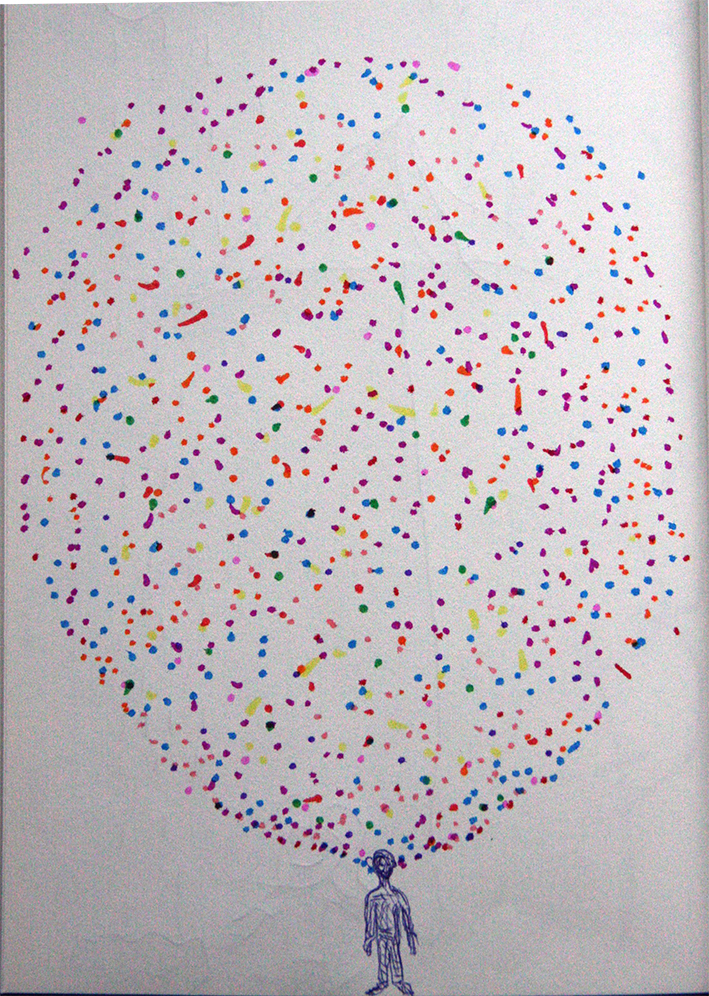

Margot2001.GitHub.io
10 weeks at the biohack academy at the Waag
View My GitHub Profile
Staining cells
Chloroplast Isolation
Portraits

This work is licensed under a Creative Commons Attribution 4.0 International License.
10 weeks biohackacademy
It has been an interesting 10 weeks at the Biohack academy. We learned how to inoculate microbes, about cells, Dna - Rna - Proteins, the latest gene-editing technology CRISPR, how to build all the machines you could need in a wetlab and a few things more. The idea of this workshop is that you hack something, either one of the machines or a scientific protocol and change it slightly, hack it. Even though I do make things, I was not a hacker. I might be a bit closer now, but the machines available in the fablab were new to me and using electronics is / was a bit of challenge. I struggled for hours with the the 3D printer and decided to let that project wait till after the workshop. And even though one of the reasons to do this workshop, my fascination with revolving patterns in nature, how the micro world resembles the macro world, the real micro world of the microbes was new to me too.
So I havent hacked the incubator. I copied it from the the repository.
Incubator
To be honest, for growing the microbes available at the Waag, you dont really need an incubator, because these organisms will grow quiet easily on room temperature and are not that fragile. You can find all you need to make one here.
The reason that I wanted to make an incubator is to do tests. I have read a few articles that claim that playing mozart to microbes in a sewage system made them grow faster. I would like to test this and the difference between Mozart and House music, and maybe some other music, on the growth of the wonderful slime mold. The thing with experiments is that the circumstances always need to be the same.
So. The incubator is finally finished now, with some help and patience from Pieter because I didnt manage the electronical bit. It looks the same as the one in the repository, with the difference that I made 2 windows for it, one dark and one transparant because some microbes prefer to grow in the dark. And since I want to make timelapses as well you cant just wrap them up.
In the repository there are two recommended temperature sensors, one digital and one analog. If you copy the design in the repository and you buy the digital sensor you will need to change the code for the arduino, which I will post later. Also, you will need a extra 4K7 resistor. For the moment I am concentrating on making "portraits" and will continue with the tests later.
Portraits
At the moment I am researching the Microbiome. Microbes, mainly bacteria, outnumber human cells in our body by 10 to 1. Scientists have identified 10,000 different species of bacteria, fungi and viruses that live in and on the body. These microbes usually coexist with the human body in peaceful harmony, playing important roles in health, such as aiding digestion and preventing harmful infections. Understanding which microbes live where may help scientists understand how to treat people with disorders, including eczema and digestive disorders, that have been linked to specific kinds of bacteria. These microbial communities are collectively known as the human microbiome. At the moment I am making "portraits" of my costudents to see how we look like at microbial scale.
Classes
On the pages on the left you can find pictures of some of the classes we have had during the past 10 weeks.